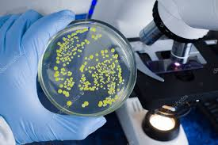

UNA SOLA PLATAFORMA, TODO EL FLUJO
Resultados que respaldan tu laboratorio
Conteo automatizado

La aplicación identifica y cuenta colonias en placas Petri a partir de una fotografía, eliminando el conteo manual y reduciendo errores. Obtienes resultados rápidos, precisos y consistentes.
Cálculo de UFC/mL

A partir del recuento, la dilución y el volumen sembrado, la aplicación calcula automáticamente las UFC/mL. Esto agiliza el análisis microbiológico y asegura valores confiables en segundos.
Historial y reportes

Cada muestra queda guardada con su imagen, fecha y datos clave. Además, puedes generar reportes en PDF para documentación, auditorías o control interno de laboratorio.